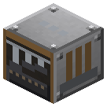

Рудная толчея


Булыжник → гравий → песок; руда 1 → 1.5 пыли (+ киноварь с красной руды); известняк 1 → 3 мела. Вал.
Толчёт пачкой по 8: булыжник → гравий, гравий → песок + каменная пыль IC2 (на CF Powder) + кремень (глины нет — она из пластов и бочки, docs/clay.md), руда → 1.5 пыли, известняк → 3 мела (молотом в верстаке — 2). Красная руда блоком (шёлковое касание) даёт ещё киноварь — 1 на 4 руды; обычно киноварь падает прямо при добыче. Крутит вал.
Параметры
| Эпоха | 2 — Пар и механика |
|---|---|
| Многоблок | нет |
| Привод | вал 6 л.с. |
| что делает | руда -> пыль 8:12 (красная — + киноварь 1 на 4); булыжник -> гравий |
| энергия на входе | вал 6 |
| из чего | котёл, поршень, бронзовая шестерня, железный вал IC2, железные и стальные листы |
Числа
| рудная толчея | 6 л.с. |
|---|---|
| толчея: мела с блока известняка (молот 2, мацератор 3; A13) | 3 шт |
Кто кормит
- вал ← Паровая машина, Паровая машина высокого давления (трансмиссия)
Кого кормит
- minecraft:flint → Тигельная печь
- Мел → Химический реактор, Реактор высокого давления
- Киноварь → Кирпичная реторта
Как устроено (из кода)
Рудная толчея (паровой век, прииски с 1850-х): тяжёлые песты на кулачковом валу толкут пачку разом. Крутится от вала через шкив. Пачка - BATCH одинаковых предметов за TIME тиков при полных оборотах. - Руда (oreX, у которой есть dustX) -> рудная пыль, полтора к одному (8 руды -> 12 пыли). Против плавки "руда -> слиток" это +50%; макератор IC2 (электричество) по-прежнему лучше - 2 дроблёных. - Булыжник -> гравий 1:1. - Гравий -> песок 1:1, а с пачки 8: ещё 2 комка глины и 1 кремень (как гравий в камнедробилке). Слоты: 0 вход, 1-3 выход.